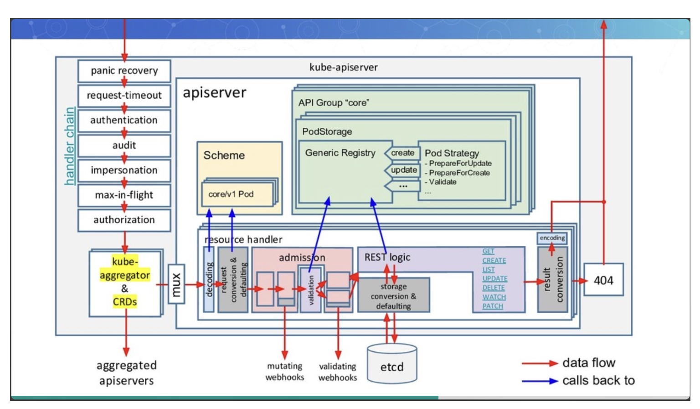
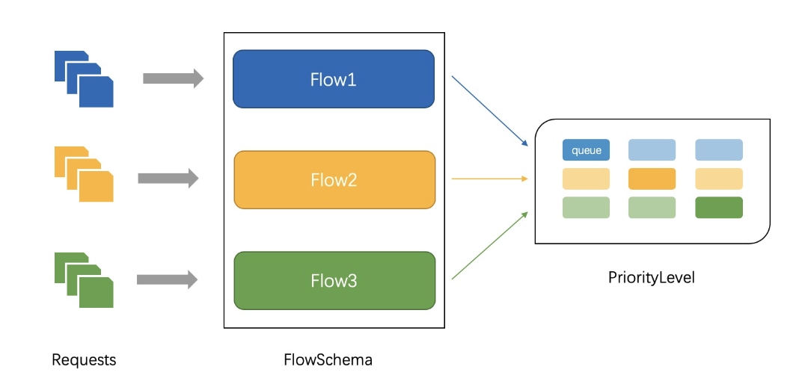

详解apiserver
apiserver一个请求的生命周期为从一个请求到认证,鉴权,准入,限流，持久化(etcd存储),流程完整如下图  我们先分析下上图左边的handler chain,对应的调用链handler chain核心代码如下
//kubernetes/kubernetes/staging/src/k8s.io/apiserver/pkg/server/config.go
func DefaultBuildHandlerChain(apiHandler http.Handler, c *Config) http.Handler {
handler := apiHandler
handler = filterlatency.TrackCompleted(handler)
handler = genericapifilters.WithAuthorization(handler, c.Authorization.Authorizer, c.Serializer)
handler = filterlatency.TrackStarted(handler, c.TracerProvider, "authorization")
if c.FlowControl != nil {
workEstimatorCfg := flowcontrolrequest.DefaultWorkEstimatorConfig()
requestWorkEstimator := flowcontrolrequest.NewWorkEstimator(
c.StorageObjectCountTracker.Get, c.FlowControl.GetInterestedWatchCount, workEstimatorCfg, c.FlowControl.GetMaxSeats)
handler = filterlatency.TrackCompleted(handler)
handler = genericfilters.WithPriorityAndFairness(handler, c.LongRunningFunc, c.FlowControl, requestWorkEstimator)
handler = filterlatency.TrackStarted(handler, c.TracerProvider, "priorityandfairness")
} else {
handler = genericfilters.WithMaxInFlightLimit(handler, c.MaxRequestsInFlight, c.MaxMutatingRequestsInFlight, c.LongRunningFunc)
}
handler = filterlatency.TrackCompleted(handler)
handler = genericapifilters.WithImpersonation(handler, c.Authorization.Authorizer, c.Serializer)
handler = filterlatency.TrackStarted(handler, c.TracerProvider, "impersonation")
handler = filterlatency.TrackCompleted(handler)
handler = genericapifilters.WithAudit(handler, c.AuditBackend, c.AuditPolicyRuleEvaluator, c.LongRunningFunc)
handler = filterlatency.TrackStarted(handler, c.TracerProvider, "audit")
failedHandler := genericapifilters.Unauthorized(c.Serializer)
failedHandler = genericapifilters.WithFailedAuthenticationAudit(failedHandler, c.AuditBackend, c.AuditPolicyRuleEvaluator)
failedHandler = filterlatency.TrackCompleted(failedHandler)
handler = filterlatency.TrackCompleted(handler)
handler = genericapifilters.WithAuthentication(handler, c.Authentication.Authenticator, failedHandler, c.Authentication.APIAudiences, c.Authentication.RequestHeaderConfig)
handler = filterlatency.TrackStarted(handler, c.TracerProvider, "authentication")
handler = genericfilters.WithCORS(handler, c.CorsAllowedOriginList, nil, nil, nil, "true")
// WithTimeoutForNonLongRunningRequests will call the rest of the request handling in a go-routine with the
// context with deadline. The go-routine can keep running, while the timeout logic will return a timeout to the client.
handler = genericfilters.WithTimeoutForNonLongRunningRequests(handler, c.LongRunningFunc)
handler = genericapifilters.WithRequestDeadline(handler, c.AuditBackend, c.AuditPolicyRuleEvaluator,
c.LongRunningFunc, c.Serializer, c.RequestTimeout)
handler = genericfilters.WithWaitGroup(handler, c.LongRunningFunc, c.NonLongRunningRequestWaitGroup)
if c.ShutdownWatchTerminationGracePeriod > 0 {
handler = genericfilters.WithWatchTerminationDuringShutdown(handler, c.lifecycleSignals, c.WatchRequestWaitGroup)
}
if c.SecureServing != nil && !c.SecureServing.DisableHTTP2 && c.GoawayChance > 0 {
handler = genericfilters.WithProbabilisticGoaway(handler, c.GoawayChance)
}
handler = genericapifilters.WithWarningRecorder(handler)
handler = genericapifilters.WithCacheControl(handler)
handler = genericfilters.WithHSTS(handler, c.HSTSDirectives)
if c.ShutdownSendRetryAfter {
handler = genericfilters.WithRetryAfter(handler, c.lifecycleSignals.NotAcceptingNewRequest.Signaled())
}
handler = genericfilters.WithHTTPLogging(handler)
if utilfeature.DefaultFeatureGate.Enabled(genericfeatures.APIServerTracing) {
handler = genericapifilters.WithTracing(handler, c.TracerProvider)
}
handler = genericapifilters.WithLatencyTrackers(handler)
handler = genericapifilters.WithRequestInfo(handler, c.RequestInfoResolver)
handler = genericapifilters.WithRequestReceivedTimestamp(handler)
handler = genericapifilters.WithMuxAndDiscoveryComplete(handler, c.lifecycleSignals.MuxAndDiscoveryComplete.Signaled())
handler = genericfilters.WithPanicRecovery(handler, c.RequestInfoResolver)
handler = genericapifilters.WithAuditInit(handler)
return handler
}
Authentication
请求到达后,首先即进行认证,方式以下几种
- X509证书
- 静态Token文件
- 引导Token: 如通过kubeadm初始化集群时创建,以Secret的形式保存在kube-system ns中
- 静态密码文件
- ServiceAccount：有kubernetes自动生成,会被自动挂在到pod /run/secrets/kubernetes.io/serviceaccount目录中
- OpenID
- Webhook 令牌身份认证
- 匿名请求
Authentication对应的chain为genericapifilters.WithAuthentication,下面我们看下具体的实现 - 通过
auth.AuthenticateRequest进行认证,每种类型都实现了该接口,认证成功后删除header头里Authorization
//staging/src/k8s.io/apiserver/pkg/endpoints/filters/authentication.go
func WithAuthentication(handler http.Handler, auth authenticator.Request, failed http.Handler, apiAuds authenticator.Audiences, requestHeaderConfig *authenticatorfactory.RequestHeaderConfig) http.Handler {
return withAuthentication(handler, auth, failed, apiAuds, requestHeaderConfig, recordAuthenticationMetrics)
}
func withAuthentication(handler http.Handler, auth authenticator.Request, failed http.Handler, apiAuds authenticator.Audiences, requestHeaderConfig *authenticatorfactory.RequestHeaderConfig, metrics authenticationRecordMetricsFunc) http.Handler {
return http.HandlerFunc(func(w http.ResponseWriter, req *http.Request) {
authenticationStart := time.Now()
//具体的认证逻辑,便利所有的认证方式,成功一个即可
resp, ok, err := auth.AuthenticateRequest(req)
// authorization header is not required anymore in case of a successful authentication.
req.Header.Del("Authorization")
req = req.WithContext(genericapirequest.WithUser(req.Context(), resp.User))
handler.ServeHTTP(w, req)
})
}
Audit
审计日志相关,有用到在分析,具体代码在genericapifilters.WithAudit,感兴趣可自行查看
MaxInFlight apiserver限流
传统的常见的限流方案如下,一般情况是够用的,最大的问题是单队列,当出现一个客户端,发送超大请求/大量请求,导致其它请求全无法响应。同时无法按照不同用户/不同
系统进行优先级限流,所有请求一刀切
- 固定窗口算法
- 漏斗算法
- 令牌筒算法
- bbr自适应保护基于cpu预测请求限流
- 分布式极大极小限流 优先级公平队列解决了上述单队列问题,同时提供优先级方案,在k8s 1.18后引入,具体如下图
- apiserver公平优先级队列限流(提案地址)  如图所示,我们介绍下限流里的概念
- flowschemas 例如有SABC四种级别的请求,flowschemas代表不同的级别请求,将不同的请求定义分类
# 删掉了部分属性
apiVersion: flowcontrol.apiserver.k8s.io/v1beta3
spec:
matchingPrecedence: 1 #匹配优先级,从上到下按优先级匹配
priorityLevelConfiguration: #关联的priorityLevel,也就是优先级队列具体的配置
name: exempt # 优先级队列名称
rules:
- nonResourceRules:
- nonResourceURLs: #简单来说就是apiserver在etcd存储数据的路径,例如/api/v1/namespaces,可正则过滤掉这些请求
#省略部分。。。
resourceRules:
#省略部分。。。
subjects:
- group:
name: system:masters
kind: Group
- PriorityLevel 代表flowschemas的配置
#k get PriorityLevelConfiguration workload-low -o yaml
kind: PriorityLevelConfiguration
spec:
limited:
lendablePercent: 90 #当前级别的优先级
limitResponse:
queuing:
handSize: 6 #shuffle sharding 的配置，每个flowschema+distinguisher的请求会被enqueue到多少个对列
queueLengthLimit: 50 #每个队列中的对象数量
queues: 128 #当前PriorityLevel的队列总数
type: Queue
nominalConcurrencyShares: 100 # 最大并发
type: Limited
限流代码分析
下面我们来看下具体的代码,本文仅分析apf(优先级公平队列) 具体的逻辑在 cfgCtlr.Handle里,其它代码暂时先跳过
//staging/src/k8s.io/apiserver/pkg/server /config.go
handler = genericfilters.WithPriorityAndFairness(handler, c.LongRunningFunc, c.FlowControl, requestWorkEstimator)
//staging/src/k8s.io/apiserver/pkg/server/filters/priority-and-fairness.go
return http.HandlerFunc(priorityAndFairnessHandler.Handle)
func (h *priorityAndFairnessHandler) Handle(w http.ResponseWriter, r *http.Request) {}
h.fcIfc.Handle(ctx, digest, noteFn, estimateWork, queueNote, execute)
//staging/src/k8s.io/apiserver/pkg/util/flowcontrol/apf_filter.go
func (cfgCtlr *configController) Handle(ctx context.Context, requestDigest RequestDigest,...)
cfgCtlr.startRequest(ctx, requestDigest, noteFn, workEstimator, queueNoteFn)
handle主要分为两部分
- 获取请求的fs和pl,以及是否是豁免请求,对应
cfgCtlr.startRequest，以及请求入队 - 等待出队,以及根据apf对应的类型,通过/apf拒绝/上下文超时
req.Finish
//staging/src/k8s.io/apiserver/pkg/util/flowcontrol/apf_filter.go
func (cfgCtlr *configController) Handle(ctx context.Context, requestDigest RequestDigest,
noteFn func(fs *flowcontrol.FlowSchema, pl *flowcontrol.PriorityLevelConfiguration, flowDistinguisher string),
workEstimator func() fcrequest.WorkEstimate,
queueNoteFn fq.QueueNoteFn,
execFn func()) {
//req存在,则代表请求可入队/豁免请求,fs为匹配的flowSchemas,pl为匹配的priorityLevel
fs, pl, isExempt, req, startWaitingTime := cfgCtlr.startRequest(ctx, requestDigest, noteFn, workEstimator, queueNoteFn)
queued := startWaitingTime != time.Time{}
var executed bool
//请求被唤醒标记
idle = req.Finish(func() {
metrics.AddDispatch(ctx, pl.Name, fs.Name)
executed = true
startExecutionTime := cfgCtlr.clock.Now()
defer func() {
//添加上队列里的等待时间
executionTime := cfgCtlr.clock.Since(startExecutionTime)
httplog.AddKeyValue(ctx, "apf_execution_time", executionTime)
}()
//请求执行
execFn()
})
}
//staging/src/k8s.io/apiserver/pkg/util/flowcontrol/fairqueuing/queueset/queueset.go
func (req *request) Finish(execFn func()) bool {
//等待限流执行完毕,放行/队列满拒绝/上下文超时
exec, idle := req.wait()
if !exec {
return idle
}
func() {
defer func() {
//很多地方有该方法,调度一次优先级队列的调度,涉及如清空一些超时的请求
idle = req.qs.finishRequestAndDispatchAsMuchAsPossible(req)
}()
execFn()
}()
return idle
}
请求入队代码,先查看匹配到哪个flowschema,都未匹配则catchAll兜底,然后根据配置获取PriorityLevel 回顾下配置,PriorityLevel是有多条队列,例如100个优先级队列,本fs可使用其中的6条
func (cfgCtlr *configController) startRequest(ctx context.Context, rd RequestDigest,
noteFn func(fs *flowcontrol.FlowSchema, pl *flowcontrol.PriorityLevelConfiguration, flowDistinguisher string),
workEstimator func() fcrequest.WorkEstimate,
queueNoteFn fq.QueueNoteFn) (fs *flowcontrol.FlowSchema, pl *flowcontrol.PriorityLevelConfiguration, isExempt bool, req fq.Request, startWaitingTime time.Time) {
cfgCtlr.lock.RLock()
defer cfgCtlr.lock.RUnlock()
var selectedFlowSchema, catchAllFlowSchema *flowcontrol.FlowSchema
//cfgCtlr.flowSchemas = kubectl get flowschemas,根据优先级匹配
for _, fs := range cfgCtlr.flowSchemas {
if matchesFlowSchema(rd, fs) {
selectedFlowSchema = fs
break
}
//flowschemas catch-all 兜底,都匹配不上则走catch-all
if fs.Name == flowcontrol.FlowSchemaNameCatchAll {
catchAllFlowSchema = fs
}
}
//priorityLevelConfiguration
plName := selectedFlowSchema.Spec.PriorityLevelConfiguration.Name
plState := cfgCtlr.priorityLevelStates[plName]
var numQueues int32
var hashValue uint64
var flowDistinguisher string
//匹配上了且不是豁免请求,需要限流,获取该flowSchema的队列数,根据flowschema.spec.distinguisherMethod.type: ByUser/namespace获取hashid
if plState.pl.Spec.Type != flowcontrol.PriorityLevelEnablementExempt {
if plState.pl.Spec.Limited.LimitResponse.Type == flowcontrol.LimitResponseTypeQueue {
numQueues = plState.pl.Spec.Limited.LimitResponse.Queuing.Queues
}
if numQueues > 1 {
flowDistinguisher = computeFlowDistinguisher(rd, selectedFlowSchema.Spec.DistinguisherMethod)
hashValue = hashFlowID(selectedFlowSchema.Name, flowDistinguisher)
}
}
//return nil表示拒绝该请求,idle 队列是否空闲
req, idle := plState.queues.StartRequest(ctx, &workEstimate, hashValue, flowDistinguisher, selectedFlowSchema.Name, rd.RequestInfo, rd.User, queueNoteFn)
return selectedFlowSchema, plState.pl, plState.pl.Spec.Type == flowcontrol.PriorityLevelEnablementExempt, req, startWaitingTime
}
plState.queues.StartRequest入队的具体逻辑,总体分为以下几部分
- 使用哪个队列,先根据FlowSchema.name以及by user/by namespace得到hashid,然后调用洗牌算法分配队列,得到队列index
-
- 洗牌算法分配队列见提案介绍
- 移除超时请求,同时设置req.decision,对应上文中req.Finish里的wait()方法,wait监测到之后,拒绝/放行,该handler结束
queueset
func (qs *queueSet) StartRequest(ctx context.Context, workEstimate *fqrequest.WorkEstimate, hashValue uint64, flowDistinguisher, fsName string, descr1, descr2 interface{}, queueNoteFn fq.QueueNoteFn) (fq.Request, bool) {
qs.lockAndSyncTime(ctx)
defer qs.lock.Unlock()
var req *request
//省略豁免请求代码
//req表示要创建放入队列里的请求,为nil则表示拒绝
req = qs.timeoutOldRequestsAndRejectOrEnqueueLocked(ctx, workEstimate, hashValue, flowDistinguisher, fsName, descr1, descr2, queueNoteFn)
//简单来说就是执行调度,将过期的请求清空掉
qs.dispatchAsMuchAsPossibleLocked()
return req, false
}
//staging/src/k8s.io/apiserver/pkg/util/flowcontrol/fairqueuing/queueset/queueset.go
func (qs *queueSet) timeoutOldRequestsAndRejectOrEnqueueLocked(ctx context.Context, workEstimate *fqrequest.WorkEstimate, hashValue uint64, flowDistinguisher, fsName string, descr1, descr2 interface{}, queueNoteFn fq.QueueNoteFn) *request {
//根据洗牌算法确认分配的队列
queueIdx := qs.shuffleShardLocked(hashValue, descr1, descr2)
queue := qs.queues[queueIdx]
//将超时请求移除
qs.removeTimedOutRequestsFromQueueToBoundLocked(queue, fsName)
defer qs.boundNextDispatchLocked(queue)
// Create a request and enqueue
req := &request{
qs: qs,
fsName: fsName,
flowDistinguisher: flowDistinguisher,
ctx: ctx,
decision: qs.promiseFactory(nil, ctx, decisionCancel),
arrivalTime: qs.clock.Now(),
arrivalR: qs.currentR,
queue: queue,
descr1: descr1,
descr2: descr2,
queueNoteFn: queueNoteFn,
workEstimate: qs.completeWorkEstimate(workEstimate),
}
//调用出队方法,很多地方都有调用，上文handler里也有看到,同时会设置req.decision
if ok := qs.rejectOrEnqueueToBoundLocked(req); !ok {
return nil
}
return req
}
Authorization
鉴权相关,具体代码在genericapifilters.WithAuthorization,授权方式有很多,最常见的RBAC,还有如通过webhook接入内部的系统
同上Authentication方法,便利authorize有一个实现即可
//staging/src/k8s.io/apiserver/pkg/endpoints/filters/authorization.go
// WithAuthorization passes all authorized requests on to handler, and returns a forbidden error otherwise.
func WithAuthorization(hhandler http.Handler, auth authorizer.Authorizer, s runtime.NegotiatedSerializer) http.Handler {
return withAuthorization(hhandler, auth, s, recordAuthorizationMetrics)
}
func withAuthorization(handler http.Handler, a authorizer.Authorizer, s runtime.NegotiatedSerializer, metrics recordAuthorizationMetricsFunc) http.Handler {
return http.HandlerFunc(func(w http.ResponseWriter, req *http.Request) {
ctx := req.Context()
authorizationStart := time.Now()
//从请求中获取如user,veb等等信息
attributes, err := GetAuthorizerAttributes(ctx)
if err != nil {
responsewriters.InternalError(w, req, err)
return
}
//具体的授权方法
authorized, reason, err := a.Authorize(ctx, attributes)
authorizationFinish := time.Now()
//通过授权
if authorized == authorizer.DecisionAllow {
audit.AddAuditAnnotations(ctx,
decisionAnnotationKey, decisionAllow,
reasonAnnotationKey, reason)
handler.ServeHTTP(w, req)
return
}
})
}
AdmissionWebhook
准入控制器,针对增删改资源的时候暴露的两个hook点,Mutate修改提交的资源,Validate验证提交的资源,很多crd用来防止资源误删等,后文详细介绍
REST logic
apiserver请求最终到etcd的逻辑,在启动apiserver的时候通过registerResourceHandlers对资源的增删改查各种请求进行注册,后文结合AdmissionWebhook详细介绍
//staging/src/k8s.io/apiserver/pkg/endpoints/installer.go
持久化存储etcd
我们结合create请求来看如何存储在etcd中
//staging/src/k8s.io/apiserver/pkg/storage/etcd3/store.go
func (s *store) Create(ctx context.Context, key string, obj, out runtime.Object, ttl uint64) error {
//key example /api/v1/namespaces/default/pods
//value example k get po nginx -o yaml
//encode 数据
data, err := runtime.Encode(s.codec, obj)
if err != nil {
span.AddEvent("Encode failed", attribute.Int("len", len(data)), attribute.String("err", err.Error()))
return err
}
//ttl时间
opts, err := s.ttlOpts(ctx, int64(ttl))
if err != nil {
return err
}
//data
newData, err := s.transformer.TransformToStorage(ctx, data, authenticatedDataString(preparedKey))
//如果不存在则创建
startTime := time.Now()
txnResp, err := s.client.KV.Txn(ctx).If(
notFound(preparedKey),
).Then(
clientv3.OpPut(preparedKey, string(newData), opts...),
).Commit()
return nil
}